LOGGING INTO GITHUB
Go to the github login page and enter your username and password.
Once there, click on the link labelled "ceahas/webpage" on the top right corner as shown here:
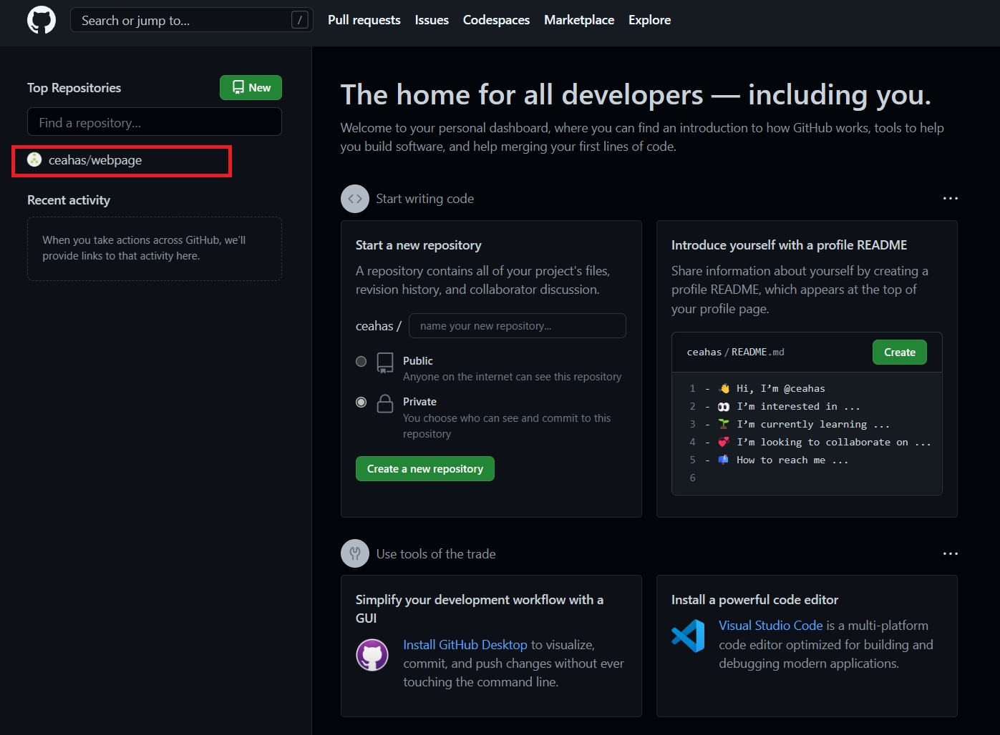
After clicking on that link, you'll be presented with a page that looks like this:
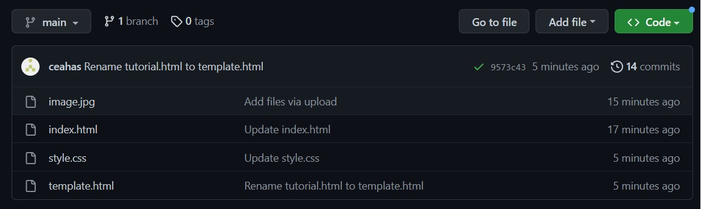
This is the folder that will hold your website. All webpages and images will be added here.
index.html will be your homepage. This is the first page people will see when they visit your site. If you only want one scrolling
page, you can just keep editing this one.
MODIFYING A PREXISTING PAGE
Let's start by setting up your index.html page, it's not too difficult!
Click on "index.html" on the page we were looking at earlier:
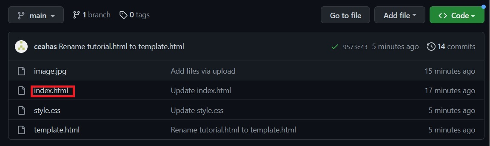
This will bring us to a page that looks like this. We need to press the edit button:
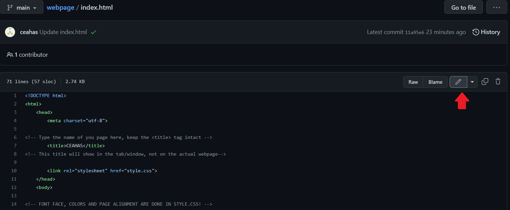
This will open up the editor window. Here you'll see the HTML code of the webpage:
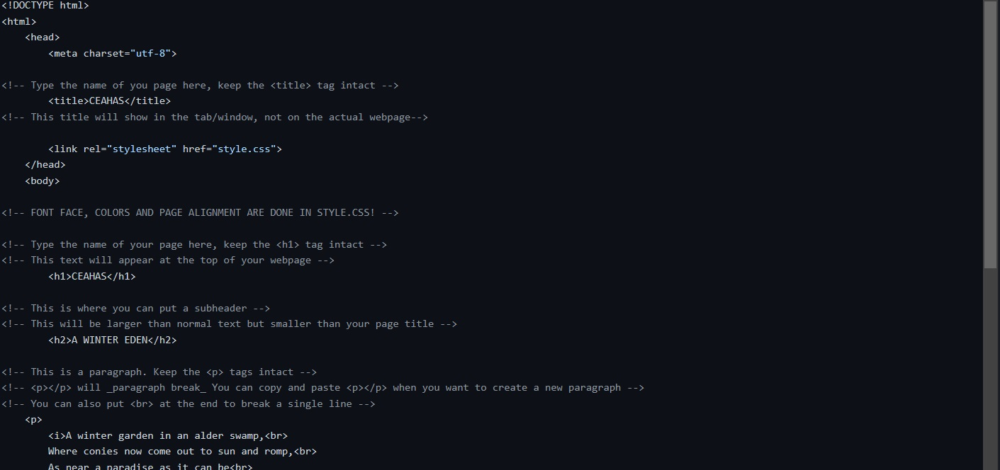
Don't panic! The only things you need to change are the actual text content of the page. You can simply remove and change the text between
html tags. For example:

As you can see, we kept the title tag intact and changed the text between the tags.
Things aren't as complicated as they might seem. I've already preconfigured the site with easy to use templates. The only thing you will
need to worry about is everything between the body tag. Here are the main things you will need to edit:
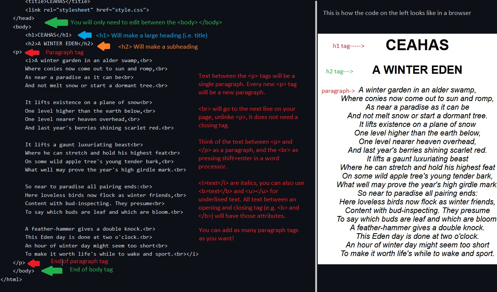
When you've edited your page and you want to save it, click on the commit changes button on the bottom of the screen. Don't worry about
any of the other fields. Your page should now update when you refresh it, you may need to wait a few minutes for the changes to appear.
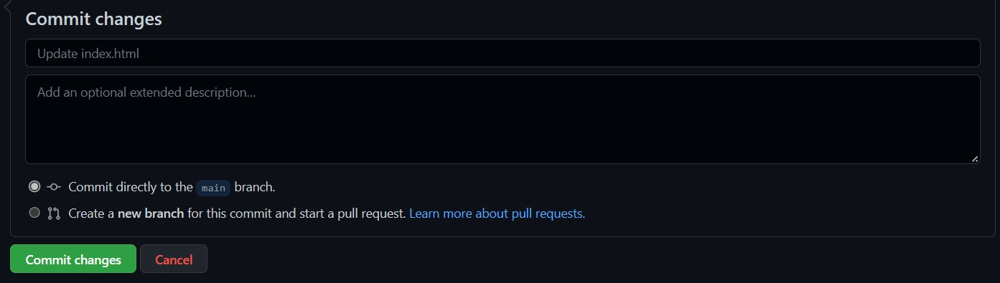
CREATING A NEW PAGE
So what if you need to make a new page? It's pretty easy to do! If you're not already on the folder with all your your files as shown in
the "logging into github" instructions, click on the "webpage" link on the top right corner of the screen as shown here:
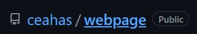
Click on the template.html file and simply copy the text as shown here:
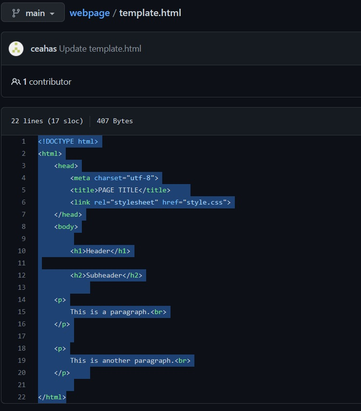
Go back to your webpage folder and select the add file button, from the drop down menu, select create new file:
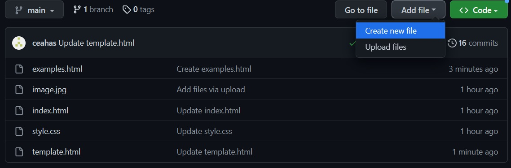
Name your file whatever you'd like to name it. Make sure it ends in .html. Paste the text you copied from the template as shown here:
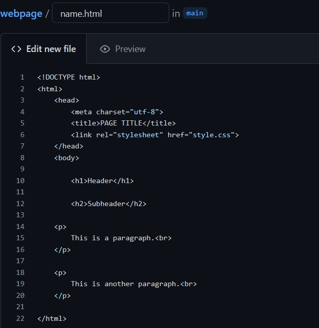
Edit the header, subheaders and paragraphs as you see fit. Make sure to commit changes before leaving the page or you will
lose everything you've done.
There's a file in your main folder called example.html, this will show you the various other things you can do with your page. Please
feel free to ask me if you want some specific instructions on how to do certain things (e.g. add an image)
Now that you have your new page, you might want to link to it from your home page. For this you'll need a hyperlink. On your index.html file,
add the following code whever you'd like:
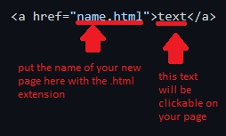
CHANGING THE FONT, COLOR OR ALIGNMENT OF YOUR PAGE
If you'd like to change the style of your page, you'll need to edit the file "style.css." You'll edit this just like you would an html file.
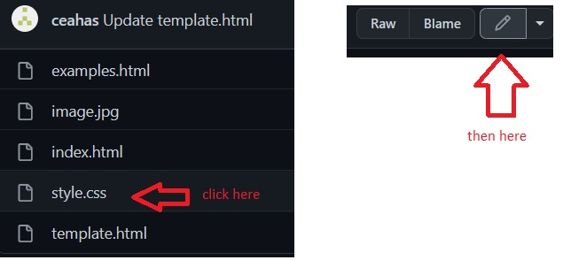
Now simply edit the coloured text here:
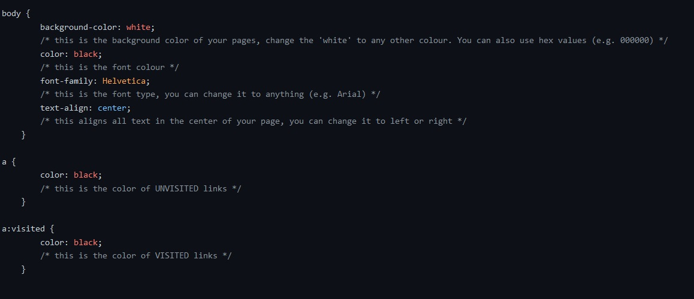
For example, we could change the background-color from white to black. We just need to make sure the ; is intact.
Once you're done, make sure to commit changes.
This will change the colours and fonts on all of your webpages on github. If you want to change the colours on a specific page,
you can try to follow the instructions on the style.css document or ask me for help.
There are comments in the style.css document (denoted by /* and darker grey text) that will explain what each option does.
UPLOADING AN IMAGE TO YOUR PAGE
If you decide that you'd like to add an image to you page, you'll first need to upload it. You can do so like this:
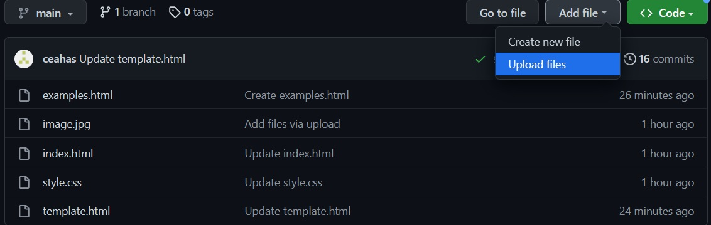
Drag and drop your image(s) into the box on the next page, and make sure to commit your changes.
On the page that you'd like to add your image, use the following html code:
<img src="image.jpg"><br>
Remember to replace image.jpg with the name of your image.
OTHER USEFUL CODE
hyperlink
<a href="pagename.html">Link Text</a>
bold text:
<b>text</b>
italic text:
<i>text</i>
underlined text:
<u>text</u>
center text:
<center>text</center>